User Manual
How to sign in, post project updates, make donations, get a tax certificate and register as a volunteer, for staff, donors and volunteers of the Gift of the Givers Foundation.
1. About this manual
This manual explains how to use the Gift of the Givers relief website. It is written for Foundation staff with no technical background. Every task is a short list of numbered steps with a picture of the screen.
| If you are… | Read |
|---|---|
| A staff member (employee) | Sections 2, 3 and 4 |
| A donor with an account | Sections 2, 5 and 6 |
| Giving without an account (anonymous) | Sections 5 and 6.3 |
| Someone who wants to volunteer | Section 7 |
What you need: a phone, tablet or computer with an up-to-date web browser (Chrome, Edge, Safari or Firefox) and an internet connection. Nothing needs to be installed.
Website address: https://gift-relief-managemen-gdbsf9bbena9epgw.southafricanorth-01.azurewebsites.net. Your administrator will confirm the address once the site is live. Bookmark it.
Screens in this manual were captured automatically from the real website during testing on 2 November 2026, using demonstration data and test names. Your screen may show different projects and amounts. On a phone the menu is folded behind the ☰ button at the top right; everything else works the same.
Payments on the demonstration site. Until the Foundation switches on live payments, the site records donations as Awaiting payment and does not charge anyone. The steps are the same once payments are live.
2. Signing in
There are three ways to use the site:
| Type of user | Account needed? | What you can do |
|---|---|---|
| Anonymous visitor | No | Browse projects, donate (your name can be hidden), apply to volunteer, contact the Foundation |
| Donor | Yes (free, self-registration) | All of the above, plus see your donation history and download tax certificates |
| Employee (staff) | Yes, and an administrator must give you staff access | Manage projects, post updates, review volunteers, check donations, issue certificates |
2.1 Anonymous visitors
You do not need to sign in. Open the website and use the menu at the top: Projects, Volunteer, Contact or the orange Donate Now button.
The first time you open the home page in a browser session, a short welcome animation plays and then the home page appears (Figure 1).
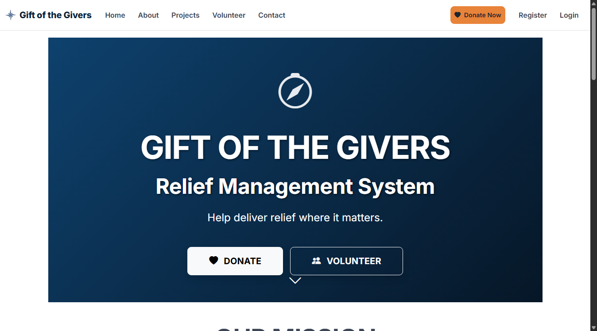
2.2 Donors: create an account
- Click Register at the top right.
- Enter your full name, email address and a password of at least 8 characters. Confirm the password.
- Click Register. You are signed in straight away as a donor.
Donations you make while signed in are linked to your account, so you can download their tax certificates later.
2.3 Signing in (donors and employees)
- Click Login at the top right. The sign-in page opens (Figure 2).
- Type your email and password.
- Tick Remember me? only on your own device.
- Click Log in.
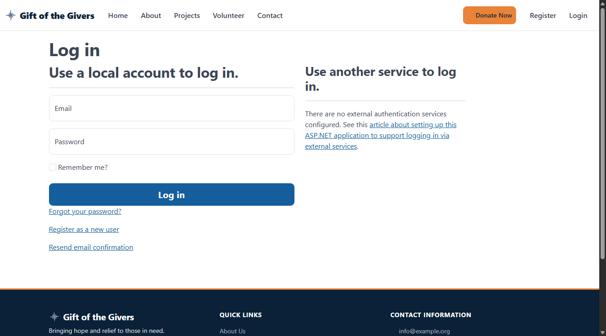
After signing in, your email appears at the top right with a Logout button.
- Employees see an extra menu item, Employee Portal. Choose Dashboard to reach the Employee Dashboard (Figure 3).
- Donors see Donor Portal, with Dashboard, My Donations and Make Donation.
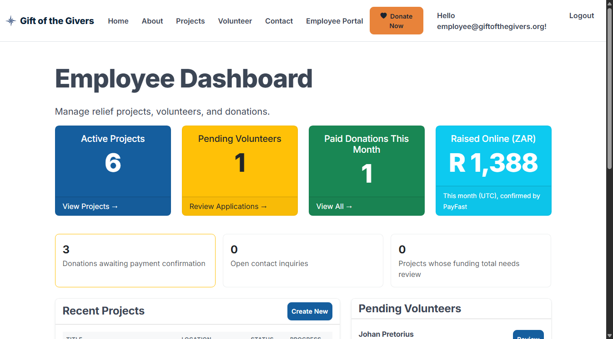
2.4 If sign-in fails
If the email or password is wrong, the page says Invalid login attempt (Figure 4). Check:
- the email has no spaces;
- Caps Lock is off (passwords are case-sensitive).
After 5 wrong attempts the account is locked for 15 minutes. This protects it from people guessing passwords. Wait, then try again. If you have forgotten your password, ask your administrator to reset it.

2.5 Signing out
Click Logout at the top right. Always sign out on shared computers.
3. Getting staff (employee) access
For security, nobody can make themselves an employee.
- The new staff member registers as in 2.2.
- An existing employee opens Employee Portal → Staff Access, types the new person's email under Grant staff access, and clicks Grant access.
- The new staff member signs out and in again. Employee Portal now appears.
To remove access when someone leaves, open Staff Access and click Remove next to their name, then confirm. Every grant and revoke is recorded in the Audit Log.
4. Employees: posting a project update
Updates tell donors what their money achieved: deliveries, progress, challenges. They appear on the public project pages.
- Sign in as an employee (2.3).
- Open Employee Portal → Manage Projects. The list of relief projects appears (Figure 5).
- Find the project and click Add Update.
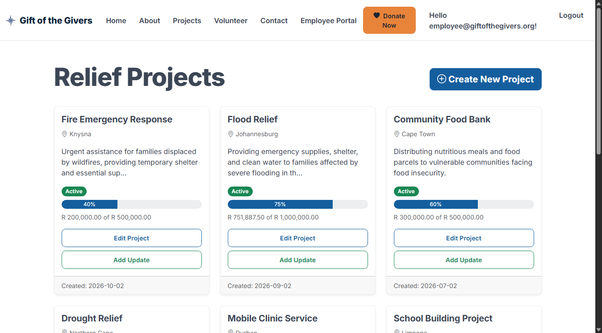
- Fill in the form (Figure 6):
- Title: a short headline, for example Day 3: 400 food parcels delivered.
- Content: what happened, in plain words (up to 4,000 characters).
- Image URL (optional): the web address of a photo already published online. Leave it empty if you have none.
- Click Publish Update.
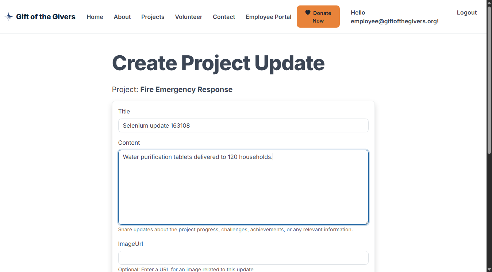
- You return to the project list with the green message Project update created successfully (Figure 7). The update is now visible to the public.

To correct an update after publishing, ask the system administrator; editing published updates is not yet available from the menu.
If the form shows red messages: a required field (Title or Content) is empty or too long. Fix it and click Publish Update again. Nothing is saved until the form is accepted.
5. Making a donation
Anyone can donate, with or without an account.
5.1 Step by step
- Click the orange Donate Now button (top of every page), or Donate on a project.
- Choose the donation type (Figure 8):
- One-time donation: a single gift.
- Monthly pledge (recurring): records that you intend to give every month. Automatic monthly billing is not yet available, so each month's payment is made separately with the same form.
- Choose a Project, or leave General Fund so the Foundation can use the money where it is most needed.
- Choose the Currency (see 5.2) and enter the Amount, or click one of the quick-amount buttons.
- Enter your Name and Email. The receipt is sent to this email.
- Choose a Preferred payment method: Credit/Debit Card or EFT.
- To give anonymously, tick Make donation anonymous (see 5.3).
- Optionally add a Message.
- Tick I have read the privacy notice…. This is required.
- Click Continue to payment (on the demonstration site the button reads Record donation) (Figure 9).
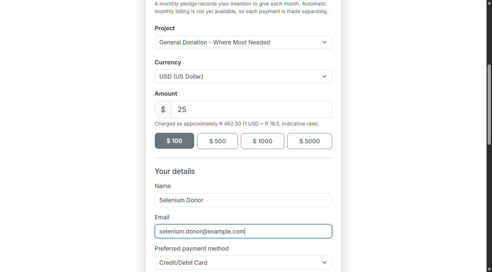
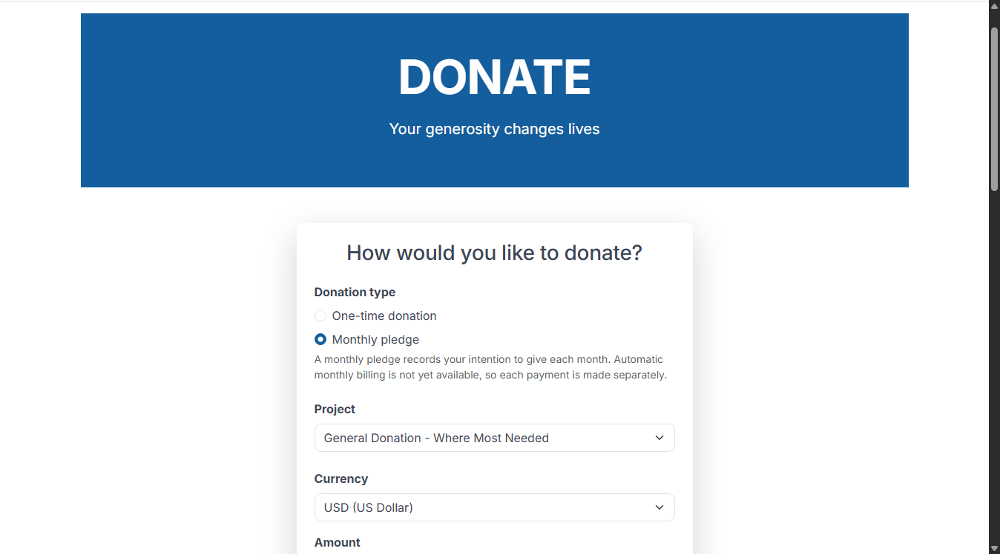
- When payments are live, you are taken to PayFast, South Africa's secure payment page, to pay by card or EFT. The Foundation never sees your card details.
- You return to the Thank You receipt page (Figure 10). It shows the amount, the rand amount charged, the type, the project, the status and your reference number. Keep the reference number.
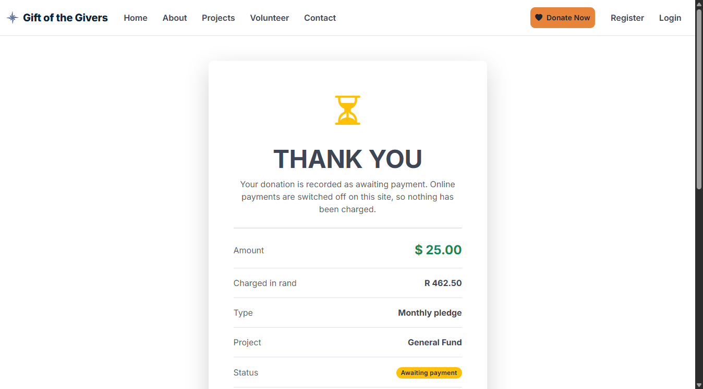
Payment status explained
| Status | Meaning |
|---|---|
| Awaiting payment | The donation is recorded; the payment is not yet confirmed. |
| Paid | PayFast confirmed the payment. It now counts towards the project total and a tax certificate is available. |
| Failed | The payment was cancelled or declined. Nothing was charged. Click Try again. |
Clicking the button twice does not create two donations. The site recognises the same form.
5.2 Giving in another currency
You can give in South African rand (ZAR), US dollars (USD) or euro (EUR).
- When you choose USD or EUR and type an amount, the form shows the rand equivalent, for example Charged as approximately R 462.50 (1 USD = R 18.50).
- PayFast charges in rand, so the rand amount is what your bank charges. Your bank may add a small foreign-transaction fee.
- The receipt shows both your amount (e.g. $ 25.00) and the Charged in rand amount (Figure 10).
5.3 Giving anonymously
Tick Make donation anonymous. Your name is then hidden from staff reports and printed as Anonymous Donor on the tax certificate. The Foundation still keeps your email privately, so it can send your receipt.
You can also give without an account, as an anonymous visitor. In that case keep your reference number, because you will need it to request a tax certificate (6.3).
5.4 If the form shows errors
Red messages appear under any field that needs attention (Figure 11). Common ones:
| Message | What to do |
|---|---|
| Amount must be between 1 and 1,000,000 | Enter an amount of at least 1. |
| The Your Email field is not a valid e-mail address | Check the email for typos. |
| You must accept the privacy notice | Tick the privacy box. |
| This project is not accepting donations | The project has closed. Choose another project or the General Fund. |
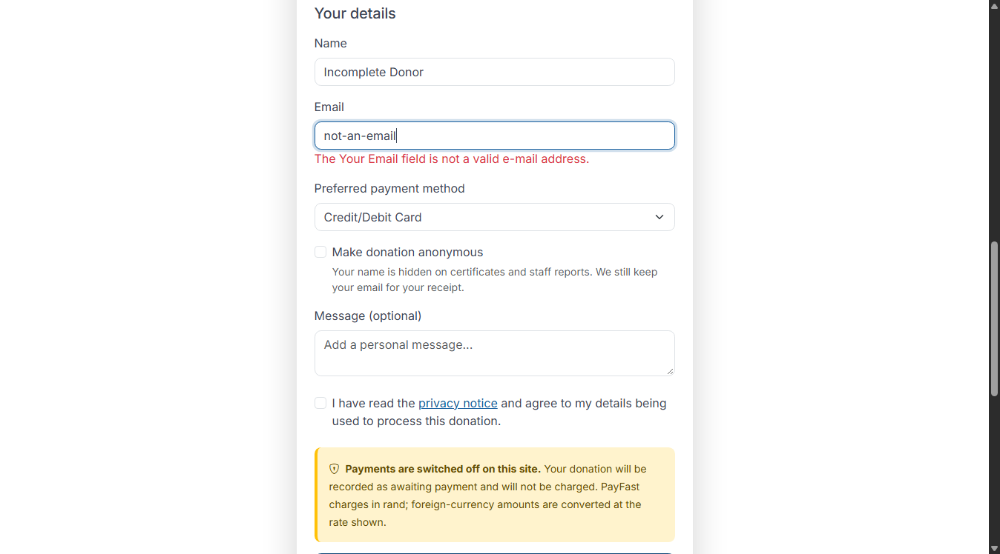
6. Getting a tax certificate (Section 18A)
A tax certificate is available for every paid donation. It is a PDF that you can save or print.
6.1 Donors with an account
- Sign in (2.3) and open Donor Portal → Dashboard (Figure 12). It shows your confirmed donations and total given.
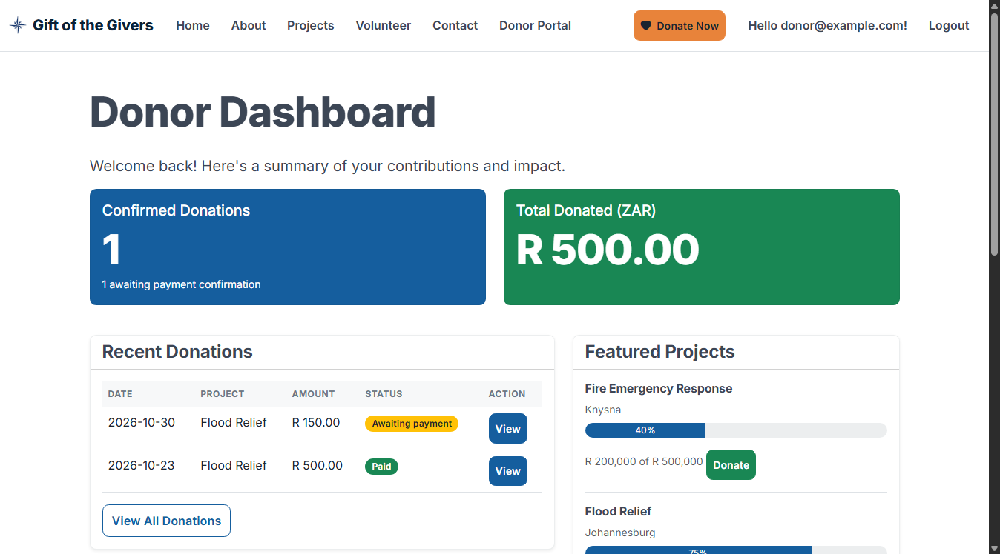
- Open Donor Portal → My Donations (Figure 13). Each paid donation has a Certificate button.
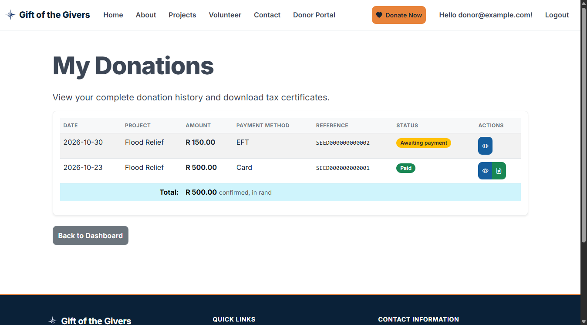
- Click Certificate. The certificate opens on screen (Figure 14).
- Click Download PDF to save it, then print it or attach it to your tax return.
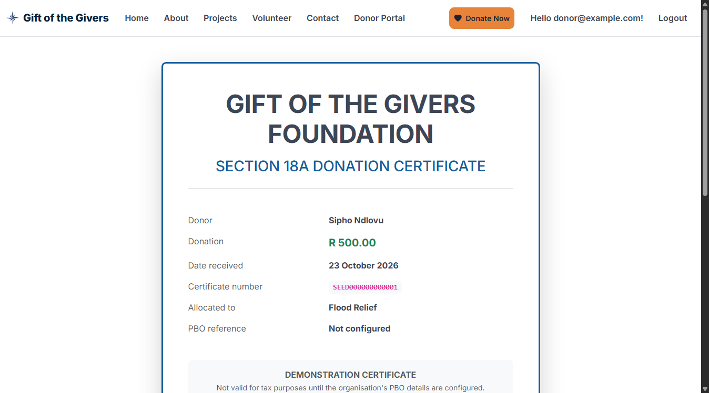
No Certificate button? The donation is still Awaiting payment, or it failed. Certificates appear automatically once PayFast confirms the payment, usually within minutes.
6.2 Straight after donating
If you were signed in when you donated, the receipt page shows View Tax Certificate as soon as the payment is confirmed.
6.3 Donors without an account, and staff issuing certificates
If the donor gave without an account, they contact the Foundation with their reference number. A staff member then:
- Signs in and opens Employee Portal → Donations.
- Clicks the Paid filter and finds the donation by the reference number or date.
- Clicks Certificate → Download PDF, and emails the PDF to the donor.
Each time a certificate is viewed or downloaded, this is recorded in the Audit Log.
Demonstration certificates are clearly marked DEMONSTRATION — not a valid Section 18A certificate until the Foundation's PBO registration number is entered by the administrator.
7. Registering as a volunteer
- Click Volunteer in the top menu.
- Fill in the form (Figure 15):
- Full name and email: required.
- Phone number and city: optional, but they help the team contact you.
- Skills: for example first aid, driving, cooking, logistics. Required.
- Availability: for example Weekends or Weekdays after 17:00. Required.
- Date of birth and emergency contact: optional. Volunteers must be at least 16.
- Tick the privacy notice box.
- Click Register interest.
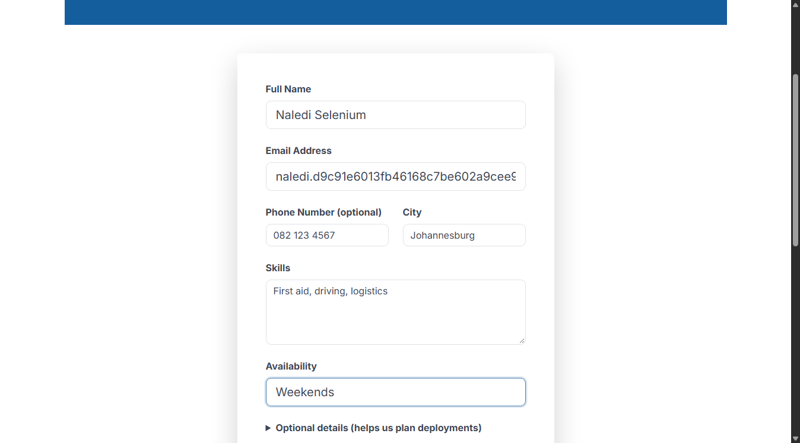
- The Thank you for volunteering page confirms your application (Figure 16). A coordinator reviews it and contacts you by email.
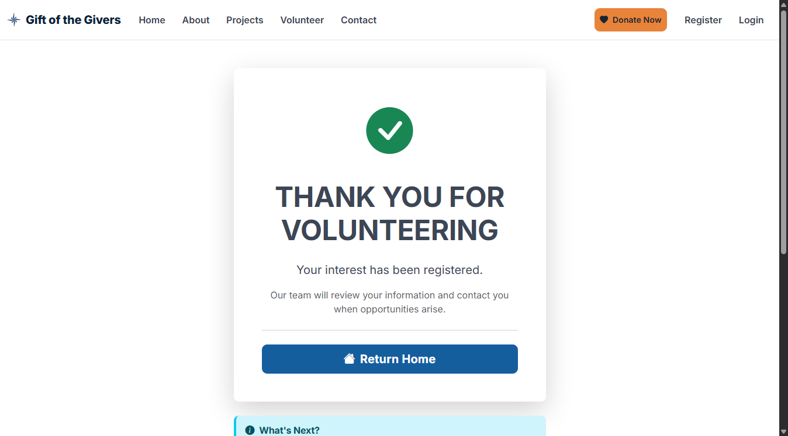
If required fields are missing, red messages appear under them and nothing is sent. Complete them and submit again.
For staff: new applications appear under Employee Portal → Manage Volunteers (and in Pending Volunteers on the dashboard). Open one, then click Approve or Reject. Approved volunteers can be assigned to active projects from the same page.
8. Accessibility and good practice
- The site works with a keyboard alone: Tab moves between fields and Enter presses a button. Screen readers announce form errors and the currency conversion.
- Text can be enlarged with Ctrl + (Windows) or ⌘ + (Mac) without breaking the layout. The site also adapts to phone screens (Figure 17).
- Colours are never the only signal: every status also has a word (Paid, Awaiting payment, Failed).
- Never share your password. Staff should sign out of shared computers and never email donor lists. Use Export CSV only on Foundation devices.
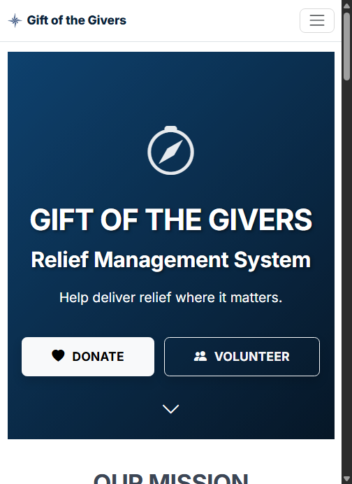
9. Frequently asked questions
| Question | Answer |
|---|---|
| I donated but the status still says Awaiting payment. | PayFast may take a few minutes to confirm. Refresh the receipt page later. If it still says so after a day, contact the Foundation with your reference number. |
| Can I change or cancel a donation? | Not on the website. Contact the Foundation with your reference number. |
| Will a monthly pledge charge me automatically? | Not yet. It records your intention; you donate each month with the form. |
| I gave in dollars. Why does my bank show rand? | PayFast settles in rand. The receipt shows the rand amount charged. |
| Is my name shown publicly? | No. Donor names are never shown publicly. Anonymous also hides your name from staff reports and certificates. |
| I am an employee but cannot see Employee Portal. | Ask another employee to grant access (section 3), then sign out and in again. |
| A form is refused with error 429 (too many requests). | More than 20 forms were sent from your connection in one minute. Wait one minute and try again. |
10. Getting help
- Donors and volunteers: use the Contact page. A staff member replies by email.
- Staff: questions arriving through the Contact page are listed under Employee Portal → Inquiries. Mark each as handled once answered.
- Technical problems (site down, errors): contact the system administrator named in the hand-over pack. Include the time, the page address and a screenshot.